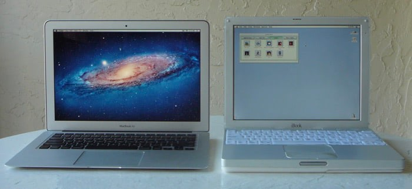

A Tale of Two Laptops
A G3 iBook
Growing up, my family always had a Macintosh computer. This makes mine a pretty gifted childhood, especially for someone born in 1985. The Macintosh II, our family computer for a long time, easily cost more then five grand. Once we had a newer, faster Performa, I was able to spend uninterrupted hours dicking around in HyperCard and ResEdit on the II. I learned my way through every file in the System Folder for System 7.1, and almost every file’s resource fork too.
After junior high, my parents bought an iMac (first generation, third revision, “blueberry”), and it made so much more possible. 32-bit icons with translucency! The Control Strip and Launcher! THE INTERNET!
It took me a while to transition to OS X, but once I got there I also transitioned my need for a computer. Playing MP3s and surfing the web overtook tinkering with the system interface or playing the same handful of Ambrosia games over again.
Recently, I’ve had the itch to go back and recreate a Classic environment, to set it up just as I remember, the satisfaction of getting everything finally the way I wanted it through many frustrating Control Panels. Emulation solutions like Basilisk and SheepShaver haven’t really cut it. So I bought one of the last Apple machines that natively booted into OS 9: a 500mHz G3 iBook (not the toilet seat kind).
The fastest Mac anyone in our family owned before the switch to OS X was that iMac, with a 333mHz G3. This iBook feels faster than that; any delays are obviously a product of the OS rather than overtaxed hardware. The battery lasts about four minutes. I knew this going into the purchase, and it doesn’t bother me too much to leave it plugged in. The display is pretty crisp. OS 9 is way more pixelly than today’s operating systems—lots of straight lines and right corners—and it all looks great.
The hard disk holds 15GB, and for a machine with zero music or movie files and an old operating system, this feels like an infinite amount. I’ve ripped all the CDs of games I play as disk images and I still haven’t filled it halfway. The iBook came with the optional AirPort (802.11b only!) card, but I think it’s broken. No matter, because my choices are Netscape or Internet Explorer 5.
OS 9 itself shows its age and can be frustrating to use after so many years with OS X. For example, double clicking a folder in the Finder opens its own window. I remember finding this frustrating to change from, and changing back is even worse. Anxiety-inducing clutter!
The Launcher control panel is a necessity for anyone who uses the Dock regularly. The Control Strip is also still great: it’s funny that features migrated from the lower-left corner here to the upper-right corner in the OS X menubar.
I have all the greats from Ambrosia installed, some newer classics like Oni and Deus Ex, and some older gems like Carmen Sandiego, Spin Doctor, Spectre, and Lode Runner. Of course, I also installed ResEdit and HyperCard to see what I remember. The Macintosh Garden has been an essential resource in taking this trip down memory lane.
A MacBook Air
I’ve owned, in order, a first-revision 12" PowerBook G4, a first-revision white MacBook, and a first-revision 13" unibody MacBook. All of these were good computers but had serious shortcomings when compared to their second revisions. The PowerBook got USB 2 and DVI in addition to the usual speed bumps. The white MacBook went from a Core Duo to a Core 2 Duo — something Apple apparently cares about, judging by Lion’s requirements. The unibody MacBook became a MacBook Pro, significantly increasing its battery life and gaining a Firewire port and SD slot.
I bought the unibody MacBook with 4GB of RAM and a 128GB SSD from Apple, so it never felt slow. Most apps loaded in one Dock bounce or less. Beach balls were rare, but noticeable when doing something heavily reliant on Flash (the fan kicked in here too). This is a common thread in Mac reviews, and removing Flash is a common response, but I’ll admit that I watch my fair share of Megavideo, Hulu and other web video, so I’m dealing with it.
The only update to that model that ever bothered me was the bump in battery life. I don’t play games or make graphics enough to care about the upgrade from a 9400m to a 320m, and I don’t use my point-and-shoot enough that managing SD cards is a hassle. I do, however, spend more time away from my uncomfortable desk, and don’t enjoy retreating back there to plug in and recharge. The weight of the MacBook has never bothered me, but after holding a MacBook Air, who wouldn’t want the lighter machine?
Welp, Apple released the second revision of the second revision of the MacBook Air to coincide with Lion’s release, and I’ve moved up to a maxed-out 13-inch model. I keep a backlit keyboard (though it’s new to this revision), I lose almost three pounds, and the battery life essentially doubles. Coming from an SSD, the day-to-day speed increase is not that noticeable. I probably get the same amount of beach balls. Tasks like encoding MP3s or scrolling through iPhoto are noticeably faster, though.
Really, the upgrade was worth it for this machine’s portability. Most Air reviews I read include a phrase along the lines of “even weeks later, I still find myself marvelling at how thin and light it is.” It’s true. It’s so thin in front that the rubber feet on the bottom seem to elevate it as high as it is thick. This makes it look like it’s floating off the desk. The battery is fantastic, even with the i7. With WiFi on and the screen at a third-brightness, I get about eight hours of battery with light browsing. This is easily double the real-world performance of the old MacBook.
My first experience with Lion was on this new machine. This certainly supports the feeling that the OS was designed for this laptop especially. The 13" screen size seems like the upper bound at which full-screen apps make sense, and the trackpad’s surface area is just right. As an OS, Lion generally feels very familiar. I don’t use Expose, Dashboard, or now Mission Control (nor Launchpad), so there’s no learning curve for those features. I’m a fan of the “natural” scrolling direction. It wasn’t taxing to re-learn.
Versions is still confusing every once in a while. The Duplicate command essentially replaced Save As, right? All my old documents are Locked, but not in the Finder, but I can usually get a keystroke or two in before the system yells at me. It’s not frustrating (yet), but not seamless either. The worst thing is TextEdit force-saving my HTML and other documents into plain text. I know there’s an option for it not to, and I have it set. I’m not the only one either, I promise. (Updated 10/25/11: 10.7.2 fixes this bug, and HTML saves as HTML again.)
This machine, so slight in its appearance, can do everything I need it to do and last a full day on one charge, and that is supremely satisfying.